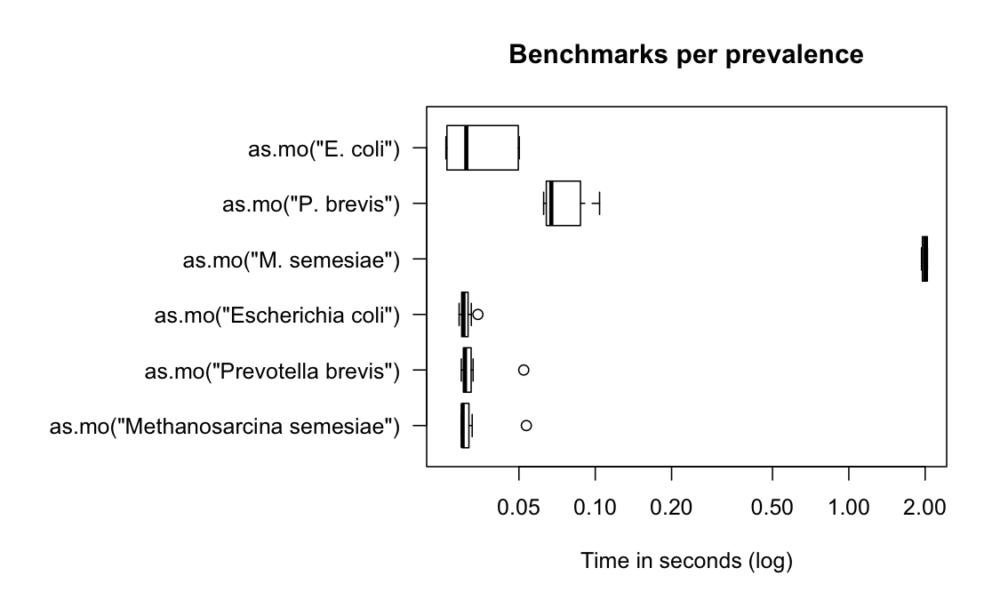
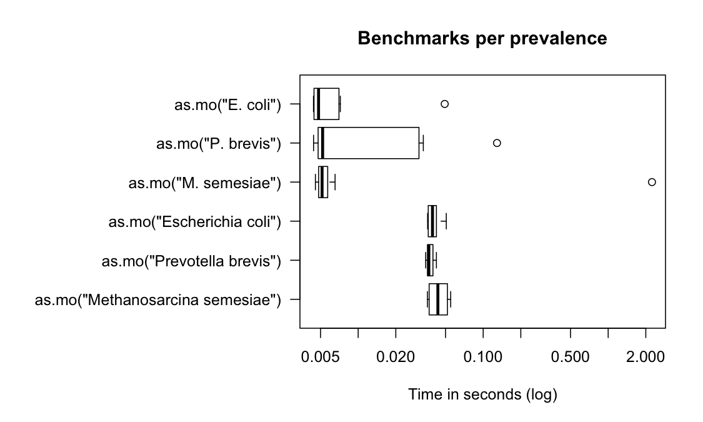

Benchmarks
Matthijs S. Berends
23 September 2019
benchmarks.RmdSource: https://gitlab.com/msberends/AMR/blob/master/vignettes/benchmarks.Rmd
One of the most important features of this package is the complete microbial taxonomic database, supplied by the Catalogue of Life. We created a function as.mo() that transforms any user input value to a valid microbial ID by using intelligent rules combined with the taxonomic tree of Catalogue of Life.
Using the microbenchmark package, we can review the calculation performance of this function. Its function microbenchmark() runs different input expressions independently of each other and measures their time-to-result.
In the next test, we try to ‘coerce’ different input values for Staphylococcus aureus. The actual result is the same every time: it returns its microorganism code B_STPHY_AURS (B stands for Bacteria, the taxonomic kingdom).
But the calculation time differs a lot:
S.aureus <- microbenchmark(
as.mo("sau"), # WHONET code
as.mo("stau"),
as.mo("STAU"),
as.mo("staaur"),
as.mo("STAAUR"),
as.mo("S. aureus"),
as.mo("S aureus"),
as.mo("Staphylococcus aureus"), # official taxonomic name
as.mo("Staphylococcus aureus (MRSA)"), # additional text
as.mo("Sthafilokkockus aaureuz"), # incorrect spelling
as.mo("MRSA"), # Methicillin Resistant S. aureus
as.mo("VISA"), # Vancomycin Intermediate S. aureus
as.mo("VRSA"), # Vancomycin Resistant S. aureus
as.mo(22242419), # Catalogue of Life ID
times = 10)
print(S.aureus, unit = "ms", signif = 2)
# Unit: milliseconds
# expr min lq mean median uq max
# as.mo("sau") 9.1 9.1 12.0 9.5 10.0 35
# as.mo("stau") 31.0 32.0 37.0 33.0 34.0 58
# as.mo("STAU") 31.0 32.0 34.0 34.0 35.0 37
# as.mo("staaur") 8.6 9.1 9.7 9.8 10.0 11
# as.mo("STAAUR") 8.7 8.9 17.0 9.4 12.0 57
# as.mo("S. aureus") 23.0 24.0 34.0 26.0 46.0 54
# as.mo("S aureus") 23.0 24.0 28.0 25.0 28.0 53
# as.mo("Staphylococcus aureus") 29.0 29.0 31.0 30.0 32.0 34
# as.mo("Staphylococcus aureus (MRSA)") 570.0 590.0 620.0 620.0 650.0 690
# as.mo("Sthafilokkockus aaureuz") 310.0 320.0 350.0 330.0 340.0 480
# as.mo("MRSA") 8.7 9.0 12.0 9.5 9.7 32
# as.mo("VISA") 19.0 20.0 22.0 22.0 24.0 26
# as.mo("VRSA") 19.0 20.0 28.0 22.0 43.0 48
# as.mo(22242419) 18.0 19.0 25.0 22.0 23.0 41
# neval
# 10
# 10
# 10
# 10
# 10
# 10
# 10
# 10
# 10
# 10
# 10
# 10
# 10
# 10
In the table above, all measurements are shown in milliseconds (thousands of seconds). A value of 5 milliseconds means it can determine 200 input values per second. It case of 100 milliseconds, this is only 10 input values per second. The second input is the only one that has to be looked up thoroughly. All the others are known codes (the first one is a WHONET code) or common laboratory codes, or common full organism names like the last one. Full organism names are always preferred.
To achieve this speed, the as.mo function also takes into account the prevalence of human pathogenic microorganisms. The downside is of course that less prevalent microorganisms will be determined less fast. See this example for the ID of Methanosarcina semesiae (B_MTHNSR_SEMS), a bug probably never found before in humans:
M.semesiae <- microbenchmark(as.mo("metsem"),
as.mo("METSEM"),
as.mo("M. semesiae"),
as.mo("M. semesiae"),
as.mo("Methanosarcina semesiae"),
times = 10)
print(M.semesiae, unit = "ms", signif = 4)
# Unit: milliseconds
# expr min lq mean median uq
# as.mo("metsem") 1343.00 1379.00 1415.00 1404.00 1424.00
# as.mo("METSEM") 1335.00 1356.00 1418.00 1410.00 1451.00
# as.mo("M. semesiae") 1852.00 2045.00 2081.00 2107.00 2154.00
# as.mo("M. semesiae") 1961.00 2037.00 2095.00 2085.00 2123.00
# as.mo("Methanosarcina semesiae") 30.55 31.13 34.35 32.63 33.33
# max neval
# 1579.00 10
# 1557.00 10
# 2163.00 10
# 2336.00 10
# 54.12 10That takes 15.6 times as much time on average. A value of 100 milliseconds means it can only determine ~10 different input values per second. We can conclude that looking up arbitrary codes of less prevalent microorganisms is the worst way to go, in terms of calculation performance. Full names (like Methanosarcina semesiae) are almost fast - these are the most probable input from most data sets.
In the figure below, we compare Escherichia coli (which is very common) with Prevotella brevis (which is moderately common) and with Methanosarcina semesiae (which is uncommon):

In reality, the as.mo() functions learns from its own output to speed up determinations for next times. In above figure, this effect was disabled to show the difference with the boxplot below - when you would use as.mo() yourself:

The highest outliers are the first times. All next determinations were done in only thousands of seconds.
Uncommon microorganisms take a lot more time than common microorganisms. To relieve this pitfall and further improve performance, two important calculations take almost no time at all: repetitive results and already precalculated results.
Repetitive results
Repetitive results are unique values that are present more than once. Unique values will only be calculated once by as.mo(). We will use mo_name() for this test - a helper function that returns the full microbial name (genus, species and possibly subspecies) which uses as.mo() internally.
library(dplyr)
# take all MO codes from the example_isolates data set
x <- example_isolates$mo %>%
# keep only the unique ones
unique() %>%
# pick 50 of them at random
sample(50) %>%
# paste that 10,000 times
rep(10000) %>%
# scramble it
sample()
# got indeed 50 times 10,000 = half a million?
length(x)
# [1] 500000
# and how many unique values do we have?
n_distinct(x)
# [1] 50
# now let's see:
run_it <- microbenchmark(mo_name(x),
times = 10)
print(run_it, unit = "ms", signif = 3)
# Unit: milliseconds
# expr min lq mean median uq max neval
# mo_name(x) 626 639 663 658 682 731 10So transforming 500,000 values (!!) of 50 unique values only takes 0.66 seconds (657 ms). You only lose time on your unique input values.
Precalculated results
What about precalculated results? If the input is an already precalculated result of a helper function like mo_name(), it almost doesn’t take any time at all (see ‘C’ below):
run_it <- microbenchmark(A = mo_name("B_STPHY_AURS"),
B = mo_name("S. aureus"),
C = mo_name("Staphylococcus aureus"),
times = 10)
print(run_it, unit = "ms", signif = 3)
# Unit: milliseconds
# expr min lq mean median uq max neval
# A 6.260 6.320 9.050 6.360 6.810 32.40 10
# B 22.800 23.000 23.800 23.200 23.900 28.20 10
# C 0.709 0.813 0.836 0.843 0.854 0.96 10So going from mo_name("Staphylococcus aureus") to "Staphylococcus aureus" takes 0.0008 seconds - it doesn’t even start calculating if the result would be the same as the expected resulting value. That goes for all helper functions:
run_it <- microbenchmark(A = mo_species("aureus"),
B = mo_genus("Staphylococcus"),
C = mo_name("Staphylococcus aureus"),
D = mo_family("Staphylococcaceae"),
E = mo_order("Bacillales"),
F = mo_class("Bacilli"),
G = mo_phylum("Firmicutes"),
H = mo_kingdom("Bacteria"),
times = 10)
print(run_it, unit = "ms", signif = 3)
# Unit: milliseconds
# expr min lq mean median uq max neval
# A 0.466 0.466 0.495 0.475 0.510 0.622 10
# B 0.497 0.511 0.558 0.517 0.575 0.844 10
# C 0.709 0.783 0.876 0.857 0.956 1.110 10
# D 0.477 0.486 0.547 0.514 0.639 0.669 10
# E 0.468 0.476 0.504 0.481 0.520 0.630 10
# F 0.454 0.461 0.509 0.475 0.522 0.687 10
# G 0.459 0.465 0.522 0.475 0.587 0.637 10
# H 0.432 0.460 0.502 0.469 0.535 0.623 10Of course, when running mo_phylum("Firmicutes") the function has zero knowledge about the actual microorganism, namely S. aureus. But since the result would be "Firmicutes" too, there is no point in calculating the result. And because this package ‘knows’ all phyla of all known bacteria (according to the Catalogue of Life), it can just return the initial value immediately.
Results in other languages
When the system language is non-English and supported by this AMR package, some functions will have a translated result. This almost does’t take extra time:
mo_name("CoNS", language = "en") # or just mo_name("CoNS") on an English system
# [1] "Coagulase-negative Staphylococcus (CoNS)"
mo_name("CoNS", language = "es") # or just mo_name("CoNS") on a Spanish system
# [1] "Staphylococcus coagulasa negativo (SCN)"
mo_name("CoNS", language = "nl") # or just mo_name("CoNS") on a Dutch system
# [1] "Coagulase-negatieve Staphylococcus (CNS)"
run_it <- microbenchmark(en = mo_name("CoNS", language = "en"),
de = mo_name("CoNS", language = "de"),
nl = mo_name("CoNS", language = "nl"),
es = mo_name("CoNS", language = "es"),
it = mo_name("CoNS", language = "it"),
fr = mo_name("CoNS", language = "fr"),
pt = mo_name("CoNS", language = "pt"),
times = 10)
print(run_it, unit = "ms", signif = 4)
# Unit: milliseconds
# expr min lq mean median uq max neval
# en 18.35 18.55 21.13 18.70 18.79 43.22 10
# de 19.69 19.94 20.81 20.24 20.74 25.64 10
# nl 25.28 25.42 28.05 25.55 26.59 48.83 10
# es 19.77 19.95 22.83 20.29 20.76 46.03 10
# it 19.81 19.88 20.19 20.13 20.55 20.85 10
# fr 19.62 20.02 22.79 20.26 21.23 44.33 10
# pt 20.05 20.37 23.19 20.67 21.46 44.96 10Currently supported are German, Dutch, Spanish, Italian, French and Portuguese.